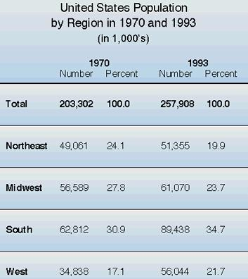

Article # 81
How Has the Population Changed in the State of Arkansas, Faulkner County, and the City of Conway, in the last 20 years?


B1: Demographics: Population and Growth Rates
By: Simon Branton-Housley, Summer Frantz, Eric Scaife, Scott Walston, Elizabeth Thomas (Withering Demons)
Principals of Geography: GEOG 1305, TTH 9:25am
Prepared April 22, 2001
How Has the Population Changed in the State of Arkansas, Faulkner County, and the City of Conway, in the last 20 years?
A population is defined as a group of like objects or organisms. For us, it is more than the number of people around us; it is the information that they carry. People are different in many ways. A person’s race, religion, economic welfare, and how far they travel to work all make up the demographics of a group. By using this information that is collected by the governmental census every 10 years and in-between by independent research groups, you can get an accurate idea of where the population is and what it is composed of. By analyzing this data, major decisions can be made, such as school placement, voting districts and other social benefits.
Arkansas’ population has gone up slightly in recent decades. The projected population of Arkansas for 2025 is 3,687,000. Its rate of increase from 1960-2000 is approximately 50 percent, and Arkansas ranks 23 in largest population rate increase during that period (Federation for American Immigration Reform web site). The current trend in population shift is to the south and west, with the Northeast and Midwest decreasing in population (US Global Change Research Information Office web site).
As you can see, the population shift is moving in our direction, and is approaching rapidly. With a larger population come some problems, such as traffic congestion, fire, and sewer resources being stretched too thin. The city planning committee has already proposed a plan to help the growth of Conway, which is projected to reach a population of 63,000 by 2010, see inset, (Conway Planning Department web site).
Several of the things that the city has planned for, are for the roads to be replaced and redesigned (http://www.conwayplanning.org/Street/Trffc2k.pdf) and fire stations and sewer lines being added (http://www.conwayplanning.org/Growth/Image6.jpg). There is currently a proposal for a western loop to run from 1-40, curve NW, and then run parallel to the Arkansas River (http://www.conwayplanning.org/Loop/Loop.html). This loop would help the expanding population of west Conway to travel to and from I-40 without having to go through central Conway. Dealing with the rush of commuters in their day-to-day tasks is a lot like dealing with the current trend in immigration by Hispanics.
So what is Hispanic? Before you can answer that question, you have to look at what makes up a "race" versus an "ethnic group." A race of people is one of the same skin color. The White race is one of light skin, of European origin. They are scattered across the world, so there is not one home or region that White people live. The same applies to the Black race. On the other hand, the term Asian is used in the census as a racial group. What is Asian? Are people from Southeast Asia, such as Korea or Japan, or is it someone from Mongolia, India, or Western Russia? They all technically live in Asia, but we do not think of them all as Asian. In performing a population count, we tend to classify people by where they are from, or what their background is most like, using politically correct terms.
The Hispanic or Latino population is considered by the US Census department as "A self-designated classification for people whose origins are from Spain, the Spanish-speaking countries of Central or South America, the Caribbean, or those identifying themselves generally as Spanish, Spanish-American, etc." They go on to say that the "Spanish/Hispanic/Latino people may be of any race." One major aspect of racial population shift is the Hispanic population increase in the US. The current growth state of the Mexican population is pushing more Hispanic people into the US, primarily in the West and South, as stated above. Mexico has an estimated 100,349,766 people as of July 2000, and has a net migration rate of -2.84 migrant(s)/1,000 population (2000 estimate) (http://www.cia.gov/cia/publications/factbook/geos/mx.html.) Net migration rate is; those who moved IN minus those who moved OUT divided by the midyear population times 1000. This means that almost 3 out every 1000 Mexican people leave their country per year, on average, meaning approx 284,993 per year com into the United States!
This issue was only brought up in this current census, which county data will be available the summer for 2001, and expanded data being released in 2002. At its current rate, the Hispanic population will take over the Black population as the new minority by 2005, Hispanic having 12.6% of the total U.S. population (Benton Foundation web site). Also, by 2050, 25% of Americans will be Hispanic, leaving only 53% of the population classified as white, which is a great shift in the majority. The rate of foreign-born immigrants in the US has gone up 288 percent since 1960, and Arkansas ranks 10th with a 560% increase with 41,700 people.
It is difficult to say if Faulkner County's population saw an increase in Hispanic because in the 1990 Census, the choices were, White, Black, American Indian, Asian, or Other. The Other category is only claiming 102 out of 60,006 people for the county. In the 1980 Census, there was 90 out of 46,192.
Faulkner County Population in 1980
Total 46,192
White 42,196
Black 3,700
American Indian 129
Asian 77
Other 90
http://www.aiea.ualr.edu/csdc/History/RcYr3_1980.html
Faulkner County Population in 1990
Total 60,006
White 54,644
Black 4,778
American Indian 256
Asian 226
Other 102
Faulkner County Population in 2000
Total 86,014
White 75,973
Black 7,298
American Indian 449
Asian 619
Native Hawaiian 28
Other 589
Two or more races 1,058
Hispanic or Latino 1,509
US Census Preliminary Data for 2000 Census
As one can see, the minority population in Faulkner County is increasing with every decade, but not nearly as fast as the total population of the county. The country as a whole is going to have to learn to deal with an ever-expanding population size and diversity.
Bibliography
http://www.gcrio.org/CONSEQUENCES/summer95/table4.html
http://www.gcrio.org/CONSEQUENCES/summer95/population.html
http://www.conwayplanning.org/
http://www.benton.org/DigitalBeat/db080699.html
http://www.fairus.org/html/042usfb1.htm#ar
http://www.fairus.org/html/042ar702.htm
http://www.aiea.ualr.edu/csdc/History/default.html
http://www.furman.edu/~kpeterso/mellon/nmr.htm
http://www.cia.gov/cia/publications/factbook/geos/mx.html

{kind=link}